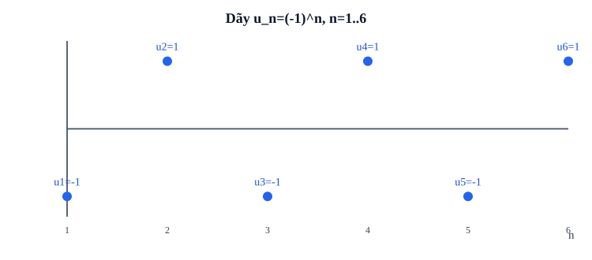

Bài 5. Dãy số
TOÁN 11 · CHƯƠNG II · KẾT NỐI TRI THỨC
Từ các số được đánh thứ tự đến dãy số: hiểu thế nào là số hạng, cách mô tả dãy, và vì sao một dãy có thể tăng, giảm hoặc bị chặn.
1. Khám phá kiến thức
Giả sử số dân của một thành phố vào năm 2020 là khoảng \(500\) nghìn người và mỗi năm tăng khoảng \(2\%\). Nếu quy luật này tiếp tục, con số năm tiếp theo phụ thuộc năm trước: \(500,\ 500\cdot1{,}02,\ 500\cdot1{,}02^2,\ldots\). Nếu gọi \(u_1=500\) là dân số năm 2020 (đơn vị nghìn người), thì \(u_n=500\cdot1{,}02^{n-1}\) là dân số dự kiến năm \(2020+n-1\). Ta không chỉ quan tâm đến giá trị riêng của mỗi năm, mà còn quan tâm vị trí theo thời gian và quy luật nối các giá trị. Đó là lí do học dãy số: dãy vừa ghi lại một chuỗi số có thứ tự, vừa giúp dự đoán và kiểm tra xu hướng.
1.1. Định nghĩa dãy số
Hãy viết các số chính phương dương theo thứ tự: \(1,4,9,16,25,\ldots\). Đứng ở vị trí thứ nhất là \(1=1^2\), vị trí thứ hai là \(4=2^2\), vị trí thứ ba là \(9=3^2\). Nếu gọi vị trí là \(n\), giá trị tại vị trí ấy là \(u_n=n^2\). Mỗi số nguyên dương \(n\) cho đúng một giá trị \(u_n\): vì thế dãy số là một hàm số có đầu vào chỉ chạy qua các chỉ số nguyên dương, chứ không phải hàm tùy ý trên toàn trục số thực.
Ta gọi \(u_1\) là số hạng đầu, \(u_n\) là số hạng thứ \(n\). Một dãy vô hạn có thể tiếp tục tới mọi \(n\ge1\); một dãy hữu hạn chỉ có các vị trí \(1,2,\ldots,m\). Chẳng hạn dãy các số chính phương dương nhỏ hơn \(50\) chỉ có \(1,4,9,16,25,36,49\): số hạng đầu là \(1\), số hạng cuối là \(49\), và không có vị trí thứ tám trong dãy hữu hạn này.
Tất cả các số hạng đều có thể giống nhau. Nếu mỗi ngày đo được cùng một số cố định \(3\), dãy \(3,3,3,\ldots\) được gọi là dãy không đổi; đừng nhầm nó với dãy tăng hoặc dãy giảm theo nghĩa bất đẳng thức nghiêm ở mục 3.
Vận dụng. Dãy hữu hạn \(2,4,6,8,10\) có bao nhiêu số hạng, số hạng đầu/cuối là gì? Có thể viết \(u_n=2n\) mà không nói điều kiện \(n\) được không?
Đối chiếu
Lời giải: Dãy có \(5\) số hạng, \(u_1=2\), \(u_5=10\). Có thể ghi công thức \(u_n=2n\) kèm điều kiện \(n\in\{1,2,3,4,5\}\). Nếu chỉ nói \(n\ge1\) thì đó là dãy vô hạn, khác đối tượng đang xét.
Kiểm lỗi
Nếu viết \(u_6=12\) cho dãy hữu hạn này, em đã tự kéo dài dãy ra ngoài tập chỉ số cho phép. Luôn đọc miền của \(n\) trước khi thay vào công thức.
1.2. Các cách cho một dãy số
Có nhiều cách kể về cùng một dãy. Ta có thể minh họa vài số đầu \(5,10,15,20,\ldots\), nhưng chỉ nhìn các số này chưa xác định duy nhất dãy vô hạn; muốn xác định rõ dãy, hãy viết công thức số hạng tổng quát \(u_n=5n\) với \(n\ge1\); mô tả bằng lời “số hạng thứ \(n\) là bội dương thứ \(n\) của \(5\)”; hoặc dùng truy hồi \(u_1=5,\ u_n=u_{n-1}+5\) với \(n\ge2\). Ba cách sau xác định chính xác cùng một dãy vô hạn; liệt kê một số hạng đầu chỉ giúp hình dung quy luật. Với dãy hữu hạn, liệt kê đầy đủ các số hạng theo thứ tự cũng xác định được dãy.
Công thức tổng quát cho phép tính trực tiếp \(u_{100}=500\) mà không phải đi qua \(99\) bước. Ngược lại, truy hồi giải thích cách dãy phát triển từ bước trước: muốn biết \(u_3\), phải biết \(u_2\), và trước đó phải biết \(u_1\). Vì thế một hệ thức truy hồi thiếu số hạng đầu chưa xác định duy nhất một dãy. Mô tả bằng lời đặc biệt hữu ích khi quy luật có ý nghĩa rõ ràng nhưng khó viết thành một công thức đơn giản, như dãy các số nguyên tố theo thứ tự.
Các số Fibonacci cũng cho thấy ích lợi của truy hồi: nếu \(F_1=F_2=1\) và \(F_n=F_{n-1}+F_{n-2}\) với \(n\ge3\), ta nhận \(1,1,2,3,5,8,\ldots\). Một công thức truy hồi có thể phụ thuộc hai số hạng trước, chứ không bắt buộc chỉ một.
Vận dụng. Cho \(v_1=2\), \(v_n=v_{n-1}+3\) với \(n\ge2\). Tìm \(v_2,v_3,v_4\), rồi đoán một công thức tổng quát.
Đối chiếu
Lời giải: \(v_2=5,\ v_3=8,\ v_4=11\); mỗi bước tăng \(3\) nên \(v_n=2+3(n-1)=3n-1\) với \(n\ge1\). Có thể kiểm \(v_1=2\) và \(v_n-v_{n-1}=3\).
Kiểm lỗi
Nếu viết \(v_n=3n+2\), tại \(n=1\) sẽ cho \(5\), không phải \(v_1=2\). Công thức tổng quát dự đoán phải kiểm số hạng đầu và hệ thức truy hồi.
1.3. Dãy số tăng, dãy số giảm và dãy số bị chặn
Khi quan sát \(2,5,8,11,\ldots\), ta thấy số hạng sau lớn hơn số hạng trước. Điều ấy phải đúng tại mọi vị trí, không chỉ vài số đầu, mới gọi là dãy tăng. Với \(\frac11,\frac12,\frac13,\frac14,\ldots\), các số hạng giảm dần vì khi mẫu \(n\) tăng, \(\frac1n\) nhỏ đi: đó là dãy giảm.
Nhưng tăng, giảm không trả lời câu hỏi “dãy có thể vượt quá một mức cố định hay không?”. Dãy \(u_n=1-\frac1n\) tăng từ \(0\) tiến gần \(1\), song mọi số hạng đều thuộc \([0;1)\), nên dãy bị chặn trên bởi \(1\) và bị chặn dưới bởi \(0\). Một dãy tăng không nhất thiết tăng vô hạn về giá trị.
Cũng có những dãy vừa không tăng vừa không giảm nhưng vẫn bị chặn. Hãy xét \(u_n=(-1)^n\), có các số hạng \(-1,1,-1,1,\ldots\). Dấu đổi qua từng bước nên không thỏa điều kiện tăng/giảm cho mọi \(n\); tuy nhiên mỗi số hạng đều nằm giữa \(-1\) và \(1\).

Vận dụng. Với \(u_n=\dfrac1n\), \(n\ge1\), dãy tăng hay giảm? Có bị chặn không? Hãy giải thích cho mọi \(n\), không chỉ liệt kê ba số đầu.
Đối chiếu
Lời giải: Vì \(n+1>n>0\), ta có \(u_{n+1}=\dfrac1{n+1}<\dfrac1n=u_n\), nên dãy giảm. Với mọi \(n\ge1\), \(0<u_n\le1\); do đó dãy bị chặn dưới bởi \(0\) và chặn trên bởi \(1\), nên bị chặn.
Kiểm lỗi
“Giảm” không có nghĩa “có số hạng âm”, cũng không có nghĩa “không bị chặn dưới”. Cần tách hai câu hỏi: so sánh các số hạng kề nhau và tìm các mốc chặn đúng cho tất cả số hạng.
2. Kiến thức SGK
2.1. Định nghĩa dãy số
Một hàm số \(u\) xác định trên tập các số nguyên dương \(\mathbb N^*=\{1,2,3,\ldots\}\) được gọi là dãy số vô hạn (thường gọi tắt là dãy số). Viết \(u_n=u(n)\), kí hiệu \((u_n)\), khai triển \(u_1,u_2,\ldots,u_n,\ldots\). \(u_1\) là số hạng đầu, \(u_n\) là số hạng thứ \(n\) hay số hạng tổng quát.
Một hàm số \(u\) xác định trên \(\{1,2,\ldots,m\}\) với \(m\in\mathbb N^*\) được gọi là dãy số hữu hạn. Các số hạng viết \(u_1,u_2,\ldots,u_m\); \(u_1\) là số hạng đầu và \(u_m\) là số hạng cuối. Không mặc định dãy hữu hạn có số hạng \(u_{m+1}\).
Dãy \((u_n)\) gọi là không đổi nếu mọi số hạng đều bằng một hằng số \(c\): \(u_n=c\) với mọi chỉ số \(n\) thuộc miền của dãy.
Cách đọc kí hiệu: Chỉ số \(n\) cho vị trí; \(u_n\) là giá trị tại vị trí đó, không phải tích \(u\cdot n\). Khi viết công thức số hạng tổng quát, luôn ghi tập chỉ số \(n\) (vô hạn hoặc hữu hạn).
2.2. Các cách cho một dãy số
(1) Liệt kê đầy đủ các số hạng: chỉ thuận tiện cho dãy hữu hạn có ít số hạng; vài số đầu kèm dấu ba chấm không tự xác định duy nhất dãy vô hạn.
(2) Công thức số hạng tổng quát: \(u_n=f(n)\), tính trực tiếp số hạng theo chỉ số \(n\).
(3) Phương pháp mô tả: dùng một tính chất/quy luật bằng lời để xác định từng số hạng.
(4) Phương pháp truy hồi: nêu đủ một hay nhiều giá trị đầu và hệ thức tính số hạng sau từ số hạng trước.
Ví dụ cùng một dãy: Những số đầu \(5,10,15,\ldots\) chỉ minh họa quy luật; dãy được xác định rõ bởi công thức \(u_n=5n\) (\(n\ge1\)), mô tả “các bội nguyên dương của \(5\) theo thứ tự tăng”, hoặc hệ thức \(u_1=5,\ u_n=u_{n-1}+5\) (\(n\ge2\)). Những cách xác định này cùng chỉ một dãy, còn vài số đầu đơn lẻ không xác định duy nhất một dãy vô hạn.
Điều kiện tự học: Với dãy truy hồi, phải có giá trị khởi đầu và chỉ rõ bắt đầu áp dụng hệ thức từ \(n\) nào. Nếu chỉ có \(u_n=u_{n-1}+5\) mà không cho \(u_1\), sẽ có vô số dãy khác nhau thỏa cùng hệ thức.
2.3. Dãy số tăng, dãy số giảm và dãy số bị chặn
Dãy \((u_n)\) gọi là tăng nếu \(u_{n+1}>u_n\) với mọi \(n\in\mathbb N^*\); gọi là giảm nếu \(u_{n+1}<u_n\) với mọi \(n\in\mathbb N^*\). Hai bất đẳng thức là nghiêm: dãy không đổi không được gọi là tăng hoặc giảm theo định nghĩa này.
Dãy \((u_n)\) bị chặn trên nếu có một số \(M\) sao cho \(u_n\le M\) với mọi \(n\); bị chặn dưới nếu có một số \(m\) sao cho \(u_n\ge m\) với mọi \(n\). Dãy bị chặn khi đồng thời bị chặn trên và dưới, tức tồn tại \(m,M\) sao cho \(m\le u_n\le M\) với mọi \(n\).
Khi \(u_{n+1}-u_n>0\) với mọi \(n\), dãy tăng; khi \(u_{n+1}-u_n<0\) với mọi \(n\), dãy giảm. Đây là cách xét dấu hiệu hai số hạng liên tiếp, tương đương trực tiếp với định nghĩa. Không suy ra tính tăng, giảm cho cả dãy chỉ từ một vài giá trị đầu.
Lưu ý: Các mốc \(m,M\) chỉ cần là một cặp số chặn đúng, không bắt buộc là số hạng của dãy hay giá trị nhỏ nhất/lớn nhất. Ví dụ \(u_n=1-\frac1n\) có \(0\le u_n<1\), nên chặn dưới bởi \(0\) và chặn trên bởi \(1\).
3. Ví dụ
3.1. Số hạng và miền chỉ số của dãy hữu hạn
Đề bài. Xét dãy gồm các số chính phương dương nhỏ hơn \(50\) theo thứ tự tăng dần. Viết các số hạng, chỉ ra số hạng đầu và cuối, và công thức \(u_n\) kèm miền \(n\).
Phân tích: Số chính phương dương là \(n^2\) với \(n=1,2,\ldots\). Vì \(8^2=64\ge50\), chỉ có bảy giá trị cho phép.
Lời giải. Dãy là \(1,4,9,16,25,36,49\). Có \(7\) số hạng, \(u_1=1,\ u_7=49\), và \(u_n=n^2\) với \(n\in\{1,2,\ldots,7\}\).
Kiểm lại: \(u_7=7^2=49<50\), còn \(8^2=64>50\), nên không có số hạng thứ tám.
3.2. Dãy số được mô tả bằng số dư
Đề bài. Lập công thức số hạng tổng quát cho dãy các số nguyên dương khi chia cho \(5\) dư \(1\), theo thứ tự tăng dần.
Phân tích: Các giá trị hợp lệ là \(1,6,11,16,\ldots\): số hạng đầu bằng \(1\), mỗi bước tăng \(5\). Số hạng thứ \(n\) cách số đầu \(n-1\) bước.
Lời giải. \(u_n=1+5(n-1)=5n-4\), \(n\in\mathbb N^*\).
Kiểm lại: \(u_1=1,\ u_2=6\) và \(u_n\equiv1\pmod5\); không bỏ số nguyên dương hợp lệ nào trong dãy đã sắp thứ tự.
3.3. Từ truy hồi tới các số hạng cụ thể
Đề bài. Cho \(u_1=1,\ u_n=3u_{n-1}+2\) với \(n\ge2\). Tính \(u_2,u_3,u_4\).
Phân tích: Đây là truy hồi nên phải đi từng bước, dùng số hạng vừa tìm được cho bước tiếp theo.
Lời giải. \(u_2=3\cdot1+2=5\); \(u_3=3\cdot5+2=17\); \(u_4=3\cdot17+2=53\).
Kiểm lại: Thay \(u_3=17\) vào hệ thức để tính lại \(u_4=53\); không lấy nhầm \(3u_n+2\) ở cùng chỉ số.
3.4. Chứng minh tăng và bị chặn trong cùng một dãy
Đề bài. Xét \(u_n=\dfrac{n-1}{n}\) với \(n\ge1\). Dãy tăng hay giảm? Có bị chặn không?
Phân tích: Viết \(u_n=1-\frac1n\) để thấy các mốc chặn; so \(u_{n+1}-u_n\) để chứng minh tính tăng cho mọi \(n\).
Lời giải. \(u_{n+1}-u_n=\left(1-\frac1{n+1}\right)-\left(1-\frac1n\right)=\frac1{n(n+1)}>0\); dãy tăng. Vì \(0\le1-\frac1n<1\) với mọi \(n\ge1\), dãy bị chặn dưới bởi \(0\) và chặn trên bởi \(1\).
Kiểm lại: \(u_1=0,\ u_2=1/2,\ u_3=2/3\). Ba số đầu giúp hình dung, còn bất đẳng thức với mọi \(n\) mới là chứng minh.
3.5. Một dãy không đơn điệu vẫn bị chặn
Đề bài. Xét \(u_n=(-1)^n\) với \(n\ge1\). Chứng minh dãy không tăng, không giảm nhưng bị chặn.
Phân tích: Hai bước liên tiếp có chiều biến thiên trái ngược: \(-1\to1\) rồi \(1\to-1\). Để xét chặn, chỉ cần tìm hai số chứa mọi giá trị.
Lời giải. \(u_1=-1<u_2=1\) nên không thể là dãy giảm; \(u_2=1>u_3=-1\) nên không thể là dãy tăng. Với mọi \(n\), \(u_n\in\{-1,1\}\), do đó \(-1\le u_n\le1\), nên dãy bị chặn.
Kiểm lại: Hình các điểm rời rạc trong tab Kiến thức cho thấy ngay tính luân phiên và hai mốc \(-1,1\).
3.6. Dãy số trong mô hình tăng trưởng dân số
Đề bài. Một thành phố có \(500\) nghìn dân vào năm 2020, ước tính tăng đều \(2\%\) mỗi năm. Theo mô hình \(P_n=500(1{,}02)^n\) (nghìn người), với \(n\) là số năm sau 2020, dự đoán số dân vào năm 2030.
Phân tích: Năm 2020 là \(n=0\). Năm 2030 ứng với \(n=10\); ở đây chỉ số mô hình bắt đầu từ \(0\), cần phân biệt với quy ước dãy trong SGK thường đánh chỉ số từ \(1\).
Lời giải. \(P_{10}=500(1{,}02)^{10}\approx609{,}497\) (nghìn người), tức khoảng \(609\) nghìn người nếu làm tròn trực tiếp đến hàng nghìn. Không làm tròn trung gian \(609{,}497\) thành \(609{,}5\) rồi làm tròn lần nữa.
Kiểm lại: Giá trị phải lớn hơn \(500\) do tốc độ tăng dương; \(1{,}02^{10}\approx1{,}218994\), nhân \(500\) được khoảng \(609{,}497\). Đây là dự báo theo mô hình, không phải số liệu dân số thực tế năm 2030.
4. Lỗi thường gặp và cách tự khắc phục
Mở từng mục để xem dấu hiệu, vì sao sai và cách sửa.
4.1. Nhầm chỉ số \(n\) với giá trị \(u_n\)
Dấu hiệu: Thấy \(u_1=3\) rồi cho rằng số hạng thứ \(3\) là số hạng đầu, hoặc viết \(u_n=2n\) như tích của một hằng \(u\) chưa định nghĩa.
Vì sao sai: \(n\) biểu thị vị trí trong dãy; \(u_n\) biểu thị giá trị tại vị trí ấy. Hai vai trò khác nhau.
Cách sửa: Viết \(n=1,2,3\) dưới các giá trị tương ứng; kiểm số hạng đầu bằng cách thay \(n=1\).
4.2. Kéo dài dãy hữu hạn ngoài tập chỉ số
Dấu hiệu: Dãy gồm bảy số chính phương dương nhỏ hơn \(50\) nhưng tự viết \(u_8=64\) như một số hạng vẫn thuộc dãy đó.
Vì sao sai: Dãy hữu hạn chỉ xác định ở \(n=1,\ldots,7\); công thức đại số có thể tính ở \(n=8\) nhưng giá trị ấy không thuộc dãy đã định nghĩa.
Cách sửa: Khi ghi \(u_n\), luôn đặt điều kiện của \(n\) ngay bên cạnh.
4.3. Cho truy hồi nhưng quên điều kiện đầu
Dấu hiệu: Viết \(u_n=u_{n-1}+3\) rồi coi dãy được xác định duy nhất.
Vì sao sai: Cùng một hệ thức có thể bắt đầu từ \(u_1=2\) hoặc \(u_1=7\), sinh ra hai dãy khác nhau.
Cách sửa: Ghi ít nhất số hạng khởi đầu cần thiết và điều kiện \(n\) để mỗi bước tính được.
4.4. Dùng vài số hạng đầu làm chứng minh tăng, giảm
Dấu hiệu: Vì \(u_1<u_2<u_3\) nên kết luận cả dãy vô hạn tăng.
Vì sao sai: Có thể dãy đổi chiều ở một chỉ số sau đó. Định nghĩa đòi bất đẳng thức đúng với mọi \(n\).
Cách sửa: Xét dấu \(u_{n+1}-u_n\) hoặc so trực tiếp \(u_{n+1}\) và \(u_n\) cho mọi chỉ số hợp lệ.
4.5. Đánh đồng bị chặn với tăng hoặc giảm
Dấu hiệu: Thấy \(-1\le u_n\le1\) rồi kết luận dãy tăng, hoặc thấy dãy tăng liền kết luận dãy không bị chặn trên.
Vì sao sai: Chặn là giới hạn về giá trị, còn đơn điệu là quan hệ thứ tự của hai số hạng liên tiếp. Hai thuộc tính độc lập.
Cách sửa: Tách hai việc: so hiệu \(u_{n+1}-u_n\) để xét tăng/giảm; tìm \(m,M\) đúng cho mọi \(n\) để xét chặn.
Nguồn biên soạn: SGK Toán 11, Kết nối tri thức với cuộc sống, tập một, Bài 5 “Dãy số”, trang in 42–47. Đối ứng 3 mục chính trong cả hai tab; hình \((u_n)=((-1)^n)\) dùng chung một SVG đã có trên main. Bản PDF đã được đối chiếu văn bản theo trang in nhưng chưa lấy được ảnh render đủ mọi trang ở lượt này.